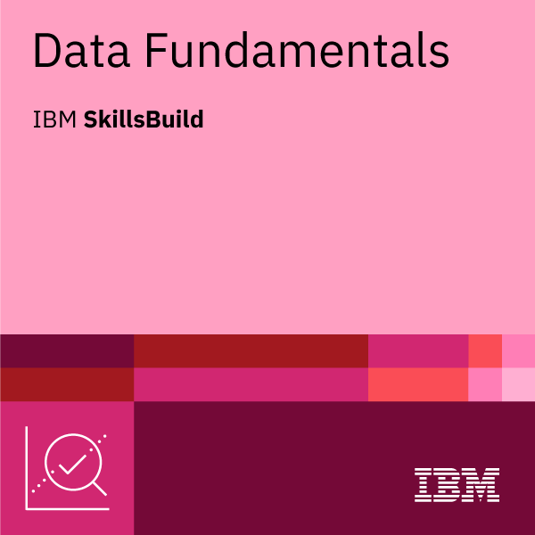

Apex Learning Virtual School
OnlineLake Ginninderra College
AustraliaWashington State University
United StatesArizona State University
United StatesUrban Heat
Vulnerability
Mapping land surface temperature, vegetation, and demographic context to reveal neighborhood-level patterns of exposure and risk.
Open StoryMap ↗Unveiling the Legacy
of Redlining
A spatial examination of how the historical legacy of redlining continues to appear in present-day public health disparities.
Open StoryMap ↗Spatial analysis & climate
Remote sensing
NASA ARSETFundamentals of Remote SensingCompleted · Certificate of completionView credential ↗
NASA ARSETUrban Heat or Human Dimensions TrainingNext step · Complete an eligible live offeringBrowse courses ↗
Esri MOOCArcGIS Imagery: Foundations and FrontiersCompleted · October 9, 2026 · Certificate of completionView credential ↗
Python & data

IBM SkillsBuildData FundamentalsCompleted · Verified digital credentialView credential ↗ IBM SkillsBuildData Analytics CertificatePriority data credentialStart pathway ↗ Cisco Networking AcademyPython Essentials 1Current course · Digital badge · PCEP preparationStart course ↗ Python InstitutePCEP — Certified Entry-Level Python ProgrammerPaid exam · Complete after Python Essentials 1View certification ↗ Esri MOOCSpatial Data Science: The New Frontier in AnalyticsEnroll by October 7, 2026Start course ↗Research & fieldwork
University of Illinois ChicagoCIRTification: Community Involvement in Research TrainingCompleted · Certificate of completionView credential ↗
KoboToolbox AcademyHumanitarian Needs AssessmentCompleted · Official certificateView credential ↗
DisasterReadyMonitoring and EvaluationAssessment-based certificationStart course ↗
The Open UniversityBecoming an Ethical ResearcherCompleted · 24 CPD pointsView credential ↗